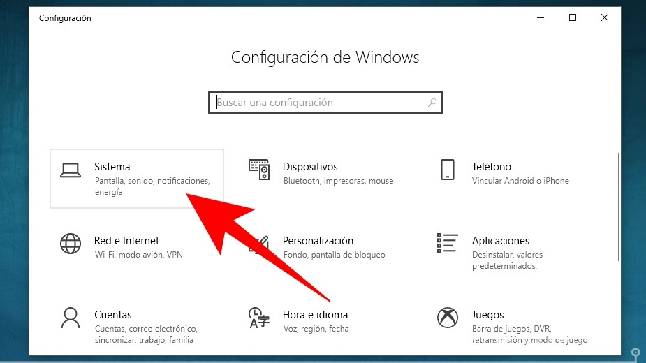
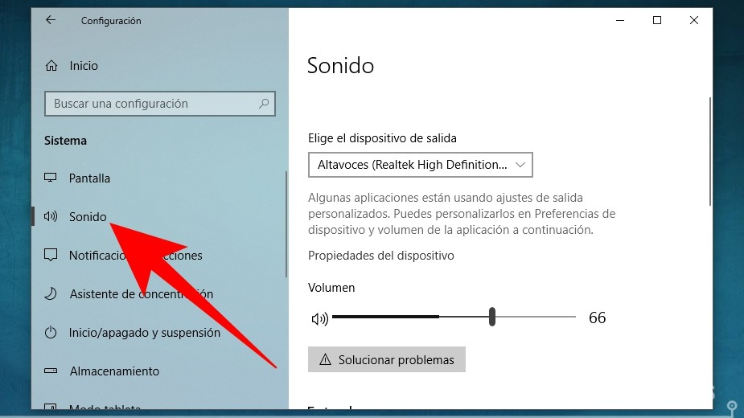
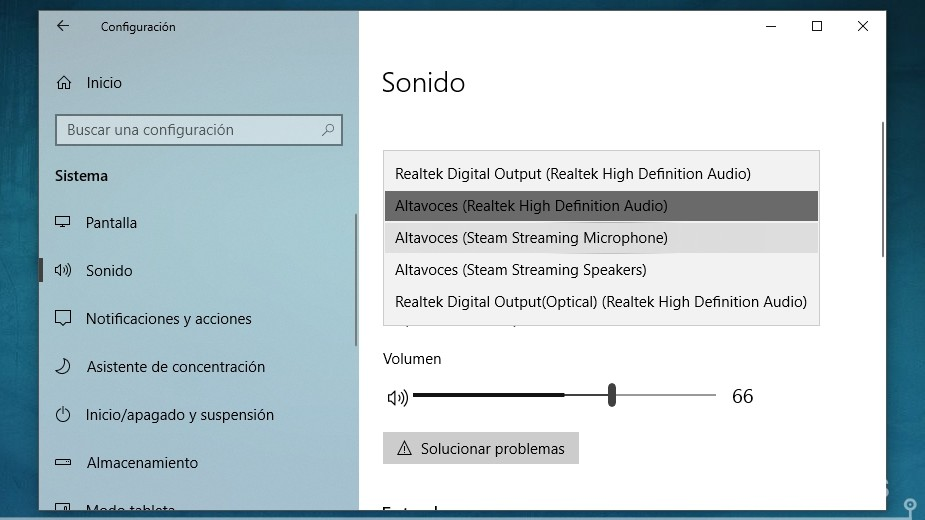
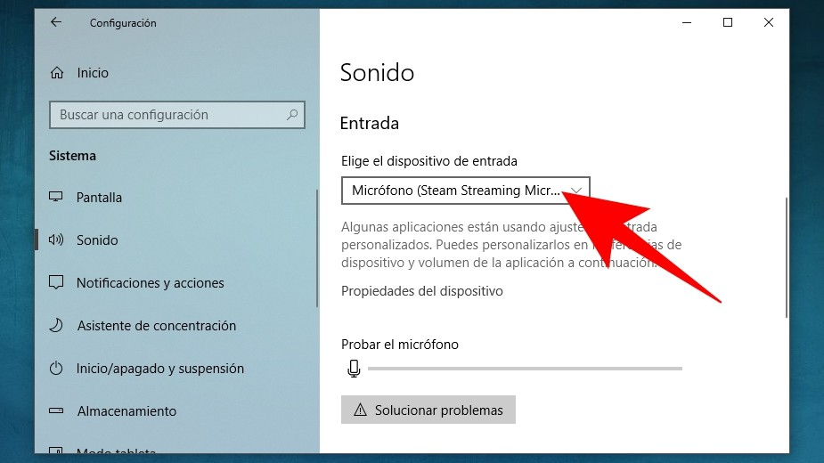
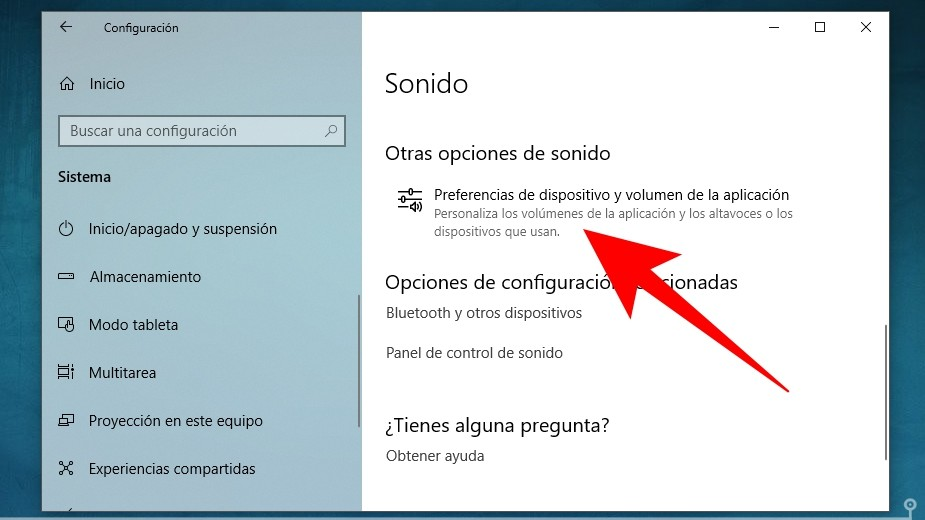
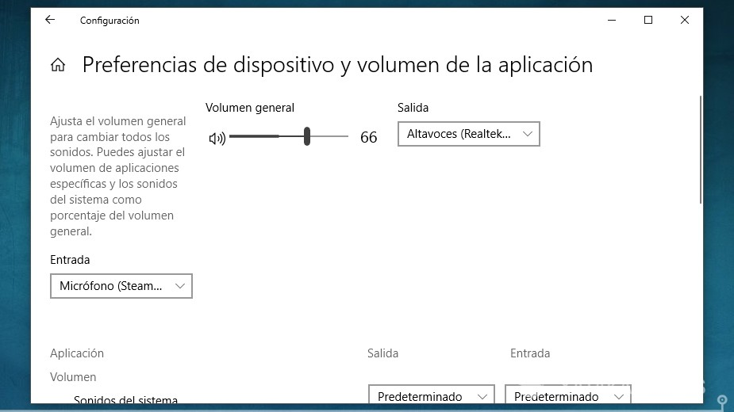
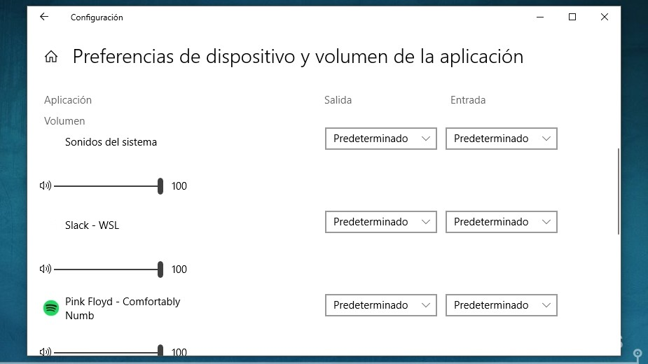

Lo primero que tienes que hacer es entrar en el menú Configuración de Windows 10. Para eso, abre el área de notificaciones
y pulsa sobre el icono de la rueda dentada, o pulsa el mismo icono cuando abras el menú de inicio.

Una vez en el menú de configuración, verás que tienes diferentes secciones. Aquí, pulsa sobre la opción Sistema,
que es en donde Microsoft ha metido las opciones de audio tras la última actualización de Windows 10.

Dentro del menú de Sistema, en la columna de la izquierda pulsa sobre la opción Sonido.
Entrarás a un menó en el que lo primero que verás es una opción de Elige el dispositivo de salida. Si pulsas sobre ella se te abrirá una ventana con opciones.

En esta ventana podrás elegir los altavoces por los que quieres que salga el sonido del sistema en el caso de que tengas varios conectados, o de que los que tengas utilicen
diferentes opciones. Más abajo también podrás cambiar el volumen, y habrá un icono Solucionar problemas por si estás encontrándote con problemas de sonido.

En la misma pantalla, si la deslizas hacia abajo llegarás a la sección Entrada. Aquí, en el menú Elige el dispositivo de entrada podrás elegir el micrófono que
quieras usar en el sistema. Puede ser uno que tengas conectado o el de tu webcam.

Si sigues bajando, puedes pulsar sobre la opción Preferencias de dispositivo y volumen de la aplicación si quieres cambiar el volumen de las aplicaciones. Haciéndolo,
podrás hacer que el sonido de determinadas apps que tengas abiertas en ese momento sea menor al del resto.

Lo primero que verás en este menú será una configuración del sonido general del dispositivo. Aquí podrás volver a cambiar la
salida (altavoces), la entrada (el micrófono) y el volumen general como lo has hecho en la pantalla anterior.

Y justo debajo verás una lista con todas las aplicaciones que tienes abiertas. En cada aplicación podrás cambiar su volumen, siendo el 100% el que utiliza el resto de sistema.
También podrás cambiar los dispositivos de entrada y salida en el caso de que quieras utilizar un micrófono o altavoces diferentes en determinadas aplicaciones
Y listo!!!!
Información recolectada de www.profesionalreview.com y www.xataka.com